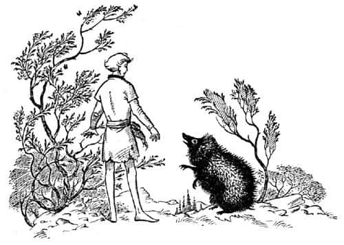
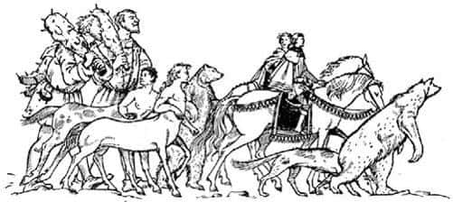
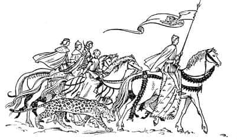

Shasta Narnia’da
“Hepsi bir rüya mıydı?” diye merak ediyordu Shasta. Hayır, rüya olamazdı, çünkü önündeki çimlikte Aslan’ın sağ ön pençesinin derin ve büyük izini görüyordu. Böyle bir ayak izi bırakabilecek ağırlığı düşünmek, insanın nefesini kesiyordu. Ancak bu büyüklükten başka daha dikkat çekici bir şey vardı. İlk baktığında, ayak izinin dibinde su görmüştü. Oysa kısa bir süre sonra ağzına kadar suyla dolmuş, taşmış ve otların arasından geçip yamaçtan aşağı akan bir dere oluşturmuştu.
Shasta eğildi, kana kana su içti; sonra başını suya daldırıp yüzünü yıkadı. Cam gibi berrak, buz gibi soğuk su onu canlandırmıştı. Shasta daha sonra kulaklarındaki suyu çıkarmak için sallandı ve alnına düşen ıslak saçlarını geriye atıp oturdu; etrafa göz gezdirmeye başladı.
Sabahın erken saatleri olduğu açıkça belli oluyordu. Güneş az önce, aşağıda, uzaklarda, sağ yanda gördüğü ormanların arasından doğmuştu.
Kabaca kuzeybatıya doğru kıvrılarak akan bir nehrin ışıltısını gördüğü, ağaçlarla kaplı yeşil bir vadinin toprakları onun için kesinlikle yeni bir şeydi. Vadinin uzak yakasında yüksek, hatta kayalık tepeler vardı, ancak bunlar, dün gördüğü dağlardan daha alçaktı. Sonra nerede olduğunu tahmin etmeye çalıştı. Dönüp arkasına baktı ve durduğu yamacın, uzaktaki yüksek sıradağların bir uzantısı olduğunu gördü.
“Anlaşıldı” dedi kendi kendine Shasta. “O dağlar Archenland ile Narnia arasındaki büyük dağlar. Dün ben onların öte yanındaydım. Geceleyin geçidi geçmiş olmalıyım. Şansım varmış, bulmuşum geçidi! Aslında şans değildi, onun işi bu. Şimdi Narnia’dayım.”
Dönerek atının eyerini çıkardı ve dizginlerini çözdü. “Berbat bir atsın, ama olsun” dedi. Shasta hakkında hiç de iyi şeyler düşünmeyen at, bu sözlere hiç aldırmadı ve hemen otlamaya başladı.
“Keşke ben de ot yiyebilseydim” diye düşündü Shasta. “Anvard’a geri dönmenin bir faydası olmaz, her tarafı kuşatılmıştır. Aşağıya vadiye insem ve yiyecek bir şeyler bulmaya çalışsam iyi olacak.”
Böylece ormana gelinceye kadar (çiy, çıplak ayaklarını çok üşütüyordu) yamaçtan aşağıya indi. Ormanın içinde ilerleyen patikaya benzer bir yol buldu. Daha birkaç dakika yürümemişti ki kalın ve hırıltılı bir ses duydu: “Günaydın komşu.”
Shasta sesin sahibini bulmak amacıyla hızla etrafına bakındı. Biraz sonra ağaçların arasından çıkan kara suratlı, küçük, dikenli bir canlı gördü. En azından, bir insan için küçük sayılabilirdi, ama bir kirpi için çok büyüktü.

“Günaydın” dedi Shasta. “Ama ben sizin komşunuz değilim. Aslında bu tarafların yabancısıyım.”
“Ah?” dedi Kirpi, soru sorarcasına.
“Dağların ötesinden geldim – biliyorsun, Archenland’dan.”
“Ah, Archenland” dedi Kirpi. “Çok uzak bir yer. Ben oraya hiç gitmedim.”
“Sanırım” dedi Shasta, “vahşi bir Calormen ordusunun, belki de şu anda Anvard’a saldırmakta olduğunu birine söylemeliyim.”
“Olamaz!” diye cevapladı Kirpi. “Eee, düşün bir kere. Calormen yüzlerce ve binlerce kilometre uzakta, büyük bir kum denizinin ötesinde. Ayrıca oranın dünyanın sonunda olduğunu söylerler.”
“Düşündüğün kadar uzakta değil” dedi Shasta. “Sence Anvard’a yapılan saldırı konusunda bir şeyler yapılmamalı mı? Ulu Kral’ına söylenmemeli mi?”
“Bir şeyler yapılması gerektiğine eminim” dedi Kirpi. “Ancak gördüğün gibi ben, öğle uykusu için yatmaya gidiyordum. Merhaba komşu!”
Bu son sözler, başı patikanın yanından bir yerden fırlayıveren açık kahverengi kocaman bir tavşana söylenmişti. Kirpi, tavşana Shasta’dan az önce öğrendiklerini hemen anlattı. Tavşan bunun ciddi bir haber olduğunu ve bir şeyler yapılması gerektiğini söyledi. Birinin, bu haberi birilerine ulaştırması konusunda hemfikirdi.
Konuşmalar böylece sürüp gitti. Arada bir, kimileri yukarılardaki dallardan, kimileri bastıkları zeminin altındaki yeraltı evlerinden gelen yaratıklar; hep bir ağızdan konuşan ve Kirpi’yle aynı fikirde olan beş tavşan, bir sincap, iki saksağan, bir keçi ayaklı Faun ve bir fare onlara katılmıştı. İşin gerçeği, sürekli kışın sona erdiği, Cadı’nın olmadığı Narnia’da, Ulu Kral Peter’in hüküm sürdüğü o altın çağlarda küçük orman canlıları öylesine mutlu, öylesine güven içindeydiler ki, biraz pervasız davranmaya başlamışlardı.
Bununla beraber, biraz sonra aralarına katılan iki kişi daha temkinliydi: Birincisi, ismi Duffle olan kızıl bir cüceydi. Diğeriyse iri, su gibi gözleri, benekli böğrü ve sanki iki parmağınızla kırabilirmişsiniz gibi görünen incecik bacaklarıyla, çok güzel ve kutsal bir yaratık olan geyikti.
“Aslan yaşıyor!” diye kükredi Cüce haberi duyar duymaz. “O zaman neden burada durup gevezelik ediyoruz? Düşman Anvard’da! Haber, hemen Cair Paravel’e ulaştırılmalı. Ordu toplanmalı. Narnia, Kral Lune’un yardımına gitmeli.”
“Ah!” dedi Kirpi. “Fakat Ulu Kral’ı Cair’de bulamazsınız. Kuzeyde devleri cezalandırmakla meşgul. Devlerden söz etmişken, komşular, bu bana—”
“Mesajı kim götürecek” diye sözünü kesti Cüce. “Burada benden daha hızlı olan var mı?”
“Ben varım” dedi Geyik. “Mesaj ne? Kaç Calormenli var?”
“İki yüz. Prens Rabadash’ın kumandasında ve—” Ancak geyiğin, o an dört ayağı da yerden kesilmiş ve şimdiden uzaklaşmıştı bile. Göz açık kapayıncaya kadar sağrısının beyazlığı uzaktaki ağaçlıklar içinde kaybolmuştu.
“Acaba nereye gidiyor?” dedi Tavşan. “Siz de biliyorsunuz, Ulu Kral’ı Cair Paravel’de bulamayacak.”
“Kraliçe Lucy’yi bulur” dedi Duffle. “Sonra da – aaa! İnsanın nesi var. Yemyeşil görünüyor. Yorgunluktan bitap düşmüş. Belki de çok aç. En son ne zaman yemek yedin, çocuk?”
“Dün sabah” dedi Shasta zayıfça.
“Hadi öyleyse, gel” dedi Cüce, destek olmak için küçük ve iri kollarını Shasta’nın beline dolayarak. “Komşular, kendimizden utanmalıyız! Sen benimle gel. Kahvaltı, konuşmaktan daha iyidir.”
Cüce çabuk hareketlerle mırıldanıp kendini kınayarak, Shasta’yı aceleyle ormanın içlerine ve küçük bir yamaçtan aşağı yönlendirip, destekleyerek yürüttü. Bu, o anda Shasta’nın umduğundan daha uzun bir yürüyüştü. Ağaçların arasından çıkıp, çıplak bir yamaca geldiklerinde, bacaklarında derman kalmamıştı. Orada, bacasından duman tüten, kapısı açık, küçük bir ev buldular. Kapıya yaklaştıklarında Duffle “Hey, kardeşler! Kahvaltıya bir ziyaretçiniz var” diye bağırdı.
O an cızırtı sesleri arasında, Shasta’nın burnuna nefis bir koku geldi. Daha önceleri hiç hissetmediği bir kokuydu bu. Umarım siz biliyorsunuzdur: Gerçekte bu, bir tavada kızartılan pastırma, yumurta ve mantar kokusuydu.
“Başına dikkat et” dedi Duffle‚ “biraz eğil.” Ancak Shasta alnını alçak kapının tavanına çarpmıştı. “Şimdi” diye devam etti Cüce, “seni oturtalım. Masa senin için biraz alçak, ama tabure de alçak. Tamam. Ve işte lapa – işte bir kap süt – ve işte kaşık.”
Shasta lapasını kaşıklarken, Cüce’nin kardeşleri (isimleri Rogin ve Bricklethumb idi) yumurtalı ve mantarlı pastırmayı, kahveyi, sıcak sütü ve kızarmış ekmekleri masanın üzerine koymakla meşguldüler.
Bu, Shasta için yeni ve harika bir şeydi, çünkü Calormen yemekleri epeyce farklıdır. Shasta, o kahverengi şeylerin ne olduğunu bile bilmiyordu; ömründe hiç kızarmış ekmek görmemişti. Ekmeğin üzerine sürülen sarı yumuşak şeyin de ne olduğunu bilmiyordu, çünkü Calormen’de hemen her zaman tereyağı yerine sıvı yağ yenirdi. Eve gelince… Arsheesh’in karanlık, pasaklı, balık kokan evinden ve Tashbaan saraylarının halı kaplı sütunlu koridorlarından farklıydı. Çatı çok alçaktı. Her şey ağaçtan yapılmıştı. Guguklu bir saat, kırmızı-beyaz ekoseli masa örtüsü, doğal çiçeklerle dolu bir vazo ve kalın camlı pencerelerde küçük perdeler vardı. Cücelerin bardaklarını, tabaklarını, çatal ve bıçaklarını kullanmak oldukça zahmetliydi. Bu, porsiyonların çok küçük olduğu anlamına geliyordu, ama tabağı tekrar tekrar doldurmak mümkündü. Zaten Shasta’nın bardağı ya da tabağı her seferinde dolduruluyor, cüceler sürekli, “Tereyağı lütfen”, “Bir bardak daha kahve?..”, “Birkaç mantar daha alır mıydın?” ya da “Bir-iki yumurta daha pişirelim mi?” diyorlardı. Sonunda yiyebilecekleri kadar yedikten sonra bulaşıkların yıkanması için üç cüce aralarında kura çektiler; şans, Rogin’e gülmedi. Sonra Duffle ve Bricklethumb, Shasta’yı dışarıya, kulübenin duvarı boyunca uzanan bir sıraya götürdüler. Herkes ayaklarını uzattı, mutlulukla iç çekti. Cüceler pipolarını yaktı. Çimlerdeki çiy kaybolmuştu. Güneş içlerini ısıtıyordu. Hafif bir esinti de olmasa, hava çok sıcak olacaktı.
“Evet yabancı” dedi Duffle, “şimdi sana toprakların nerelere uzandığını göstereceğim. Buradan, neredeyse tüm güney Narnia’yı görebilirsin. Biz bu manzarayla gurur duyuyoruz. Hemen solunda, o yakın tepelerin ötesinde Batı Dağları’nı görebilirsin. Sağındaki şu yuvarlak tepeye Taş Masa Tepesi denir. Onun hemen ötesinde—”
Ne var ki sözleri o anda bir horultuyla kesildi. Shasta, gece yolculuğundan ve mükemmel bir kahvaltıdan sonra uyuyakalmıştı. Nazik cüceler farkına varır varmaz, onu uyandırmamak için birbirlerine işaretler yapmaya başladılar. Aslında o kadar çok fısıldaşıp kafalarını salladılar, o kadar çok kalkıp ayakuçlarında yürüdüler ki, eğer Shasta daha az yorgun olsaydı kesinlikle uyanırdı.
Shasta neredeyse bütün gün süren iyi bir uyku çekti; akşam, yemek zamanı uyandı. Bu evdeki yatakların hepsi onun için çok küçüktü ama yere süpürge otlarından güzel bir yatak yaptılar. Ve Shasta, bütün gece ne rüya gördü ne de kımıldadı. Ertesi sabah, dışarıdan gelen heyecan verici tiz bir ses duyduklarında kahvaltılarını yeni bitirmişlerdi.
“Borular!” dedi cüceler, hepsi dışarıya koşarak çıkarken.
Boruların sesi yeniden duyuldu. Shasta için yeniydi bu sesler. Ne Tashbaan’ın boruları gibi kocaman ve vakarlı, ne de Kral Lune’un av boruları gibi neşeliydi, ama keskin, berrak ve cesaret vericiydi. Biraz sonra doğudaki ormanlardan gelen sese, atların ayak sesleri karıştı. Çok geçmeden kolbaşının ucu göründü. Önce, doru bir at üzerinde büyük bir Narnia bayrağı (yeşil zemin üzerinde kırmızı bir aslan resmi) taşıyan Lord Peridan göründü. Shasta onu hemen tanıdı. Sonra yan yana üç atlı göründü; ikisi süvari atına, biri de midilliye binmişti. Savaş atlarının üzerinde, Kral Edmund ve onun yanında, oklarla dolu bir sadak ve sırtına çapraz takılı bir yay taşıyan, zincirlerle örülü bir zırh ve miğfer giymiş, aydınlık yüzlü, sarı saçlı bir kadın vardı. “Kraliçe Lucy” diye fısıldadı Cüce. Midillinin üzerindeki Corin’di. Daha sonra ordunun ana bölümü göründü: Sıradan atlara binmiş adamlar, (Narnia savaşırken üzerine binilmesine izin veren) konuşan atlara binmiş adamlar, sentorlar, birçok badire atlatmış ciddi görünümlü ayılar, büyük konuşan köpekler ve en sonunda da altı dev. Çünkü Narnia’da iyi devler vardır. Shasta onların kendilerinden yana olduğunu bilmesine karşın ilk önce onlara güçlükle bakabilmişti; bazı şeylere alışmak zaman alır.


Kral ve Kraliçe kulübeye ulaştıklarında, cüceler onların önünde eğildiler. Kral Edmund, “Şimdi, dostlarım! Durup bir şeyler yemenin zamanıdır!” dedi. Ve o anda ortalığı atlardan inenlerin, açılan kumanya çantalarının, konuşma seslerinin telaşı kapladı. Corin, bir çığlık atıp koşarak geldi ve Shasta’nın iki elini de tutup “Ne! Sen buradasın ha! Oraları sağ salim geçebildin demek. Buna memnunum. Şimdi biraz eğleneceğiz. Şanslıyız değil mi? Daha dün Cair Paravel’deki limandaydık. Bizi Anvard’a saldırı haberiyle ilk karşılayan kişi Geyik Chevry oldu. Düşünebiliyor musun—”
“Majestelerinin arkadaşı kim?” dedi atından yeni inen Kral Edmund.
“Görmüyor musunuz efendim” dedi Corin. “Benim benzerim: Tashbaan’da benimle karıştırdığınız çocuk.”
“Gerçekten senin benzerin” dedi hayretle Kraliçe Lucy. “İkizin kadar benziyor. Olağanüstü bir şey bu.”
“Lütfen Majesteleri” dedi Shasta, Kral Edmund’a. “Ben hain değilim, gerçekten değilim. Planlarınızı duymamazlık edemedim. Fakat onları düşmanlarınıza anlatmayı rüyamda bile düşünmedim.”
“Artık senin hain olmadığını biliyorum oğlum” dedi Kral Edmund, elini Shasta’nın başına koyarak. “Ancak kimsenin senin hain olduğunu düşünmesini istemiyorsan, gelecek sefer başka kulaklara söylenmesi amaçlanmış sözleri duymamaya çalış. Şimdi sorun yok.” Bundan sonra o kadar çok telaş, konuşma, koşuşturma oldu ki Shasta birkaç dakikalığına Corin’i, Edmund’u ve Lucy’yi gözden kaybetti. Fakat Corin, rahat durmayan biriydi. Nitekim çok geçmeden Shasta, Kral Edmund’un yüksek sesle ona söylendiğini işitti:
“Aslan’ın yelesi aşkına, Prens. Bu kadarı da fazla. Ekselansları hiçbir zaman daha uslu biri olmayacak mı? Tüm ordumuzun toplamından daha fazla tahripkârsın. Senin yerine bir eşek arısı alayına seve seve kumanda ederim.”
Shasta kalabalığın arasından sokuldu ve gerçekten de kızgın görünen Edmund’u, kendinden biraz utanan Corin’i ve yerde yüzünü buruşturup oturan tuhaf bir cüceyi gördü. İki Faun, cücenin zırhını çıkarmasına yardım ediyorlardı.
“İksirim yanımda olsaydı” diyordu Kraliçe Lucy, “bunun hemen çaresine bakardım. Fakat Ulu Kral onu alelade savaşlarda taşımamamı ve sadece olağanüstü durumlar için saklamamı emretti!”
Olanlar şöyleydi: Corin, Shasta’yla konuştuğu sırada, Thornbut adındaki cüce onu dirseğinden dürtüklemişti.
“Ne var Thornbut?” dedi Corin.
“Soylu Ekselansları” dedi Thornbut, onu kenara çekerek, “bugünkü yürüyüşümüz bizi geçidin öte yanına, soylu babanın kalesine götürecek. Akşama varmadan savaşa girebiliriz.”
“Biliyorum” dedi Corin. “Bu harika!”
“Harika ya da değil” dedi Thornbut, “Kral Edmund’dan siz Ekselanslarının savaşa girmemesini sağlamak için çok sıkı emir aldım. Savaşı izlemenize izin verilecek. Ve bu da çok genç yaştaki siz Ekselanslarına göre çok bile.”
“Oh ne saçma!” diye patladı Corin. “Elbette ben de savaşacağım. Kraliçe Lucy okçularla birlikte savaşıyor ya.”
“Kraliçe arzuladığını yapar” dedi Thornbut. “Fakat siz benim gözetimim altındasınız. Ya bana, siz Ekselanslarının ayrılmasına izin verene kadar midillinizi benimkinin yanında tutacağınıza (yarım boyun bile ilerde değil) cidden ve bir prens olarak söz vermelisiniz ya da – bu majestelerinin emridir – iki mahkûm gibi bileklerimiz birbirine bağlı olarak gideceğiz.”
“Beni bağlamaya çalışırsan, seni yere sererim” dedi Corin.
“Ekselanslarının bunu yaptığını görmek isterim” dedi Cüce.
Corin gibi bir çocuğa bu kadarı yeterdi. Bir saniye sonra büyük bir gürültüyle boğuşmaya başladılar. Corin’in boyu ve kolları daha uzundu. Buna karşın Cüce ondan yaşça daha büyük ve güçlüydü. Eşit koşullar altında bir karşılaşma olabilirdi, ancak bir talihsizlik sonucu kavga (taşlık bir yamaçta olabilecek kavgaların en kötüsüydü) başlamadan bitti.
Thornbut gevşek bir taşın üzerine basmış, burnunun üzerine düşmüştü. Ayağa kalkmak istediğinde topuğunu incittiğinin farkına varmıştı. Bu onun, en azından on beş gün ata binmesini ve yürümesini engelleyecek ıstırap verici bir incinmeydi. “Ekselansları yaptığını görüyor mu?” dedi Kral Edmund. “Savaşın eşiğinde bizi, kendini ispatlamış bir savaşçıdan ettiniz.”
“Onun yerine ben giderim efendim” dedi Corin.
“Hah” dedi Edmund. “Kimse cesaretinden kuşku etmiyor. Fakat savaştaki bir çocuk sadece kendi tarafı için tehlikelidir.”
O anda Kral, başka bir şeye bakmak üzere çağrıldı. Corin, Cüce’den defalarca özür diledikten sonra aceleyle Shasta’ya yaklaşarak fısıldadı:
“Çabuk. Artık boş bir at ve Cüce’nin zırhı var. Kimse fark etmeden giy.”
“Neden?” dedi Shasta.
“Neden mi, savaşa katılabilelim diye elbette! İstemiyor musun?”
“Oh, ah, evet, tabii ya” dedi Shasta. Ancak bunu yapmayı asla düşünmemişti. İçini bir rahatsızlık hissi kapladı.
“Tamam” dedi Corin. “Kafanı geçir. Şimdi de kılıcın kemerini tak. Fakat yürüyüş kolunun en sonunda gitmeliyiz. Ayrıca fareler kadar sessiz olmalıyız. Savaş başladığında herkes, bizi fark edemeyecek kadar çok meşgul olacak.”